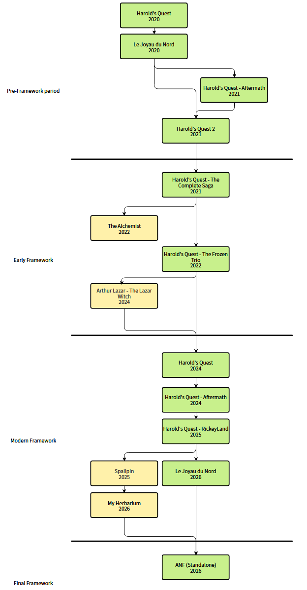

Histoire du framework
ANF est un framework servant au départ à créer des Visual Novel 2D. Il a évolué au fil du temps et
est maintenant un framework plutôt centrée sur la création de point & click / visual novel 3D non
linéaires.
De ce fait, il a eu plusieurs formes au cours des années, voir noms. On peut distinguer 4 phases
dans son évolution :
- La phase pré-framework fut la première phase du framework.
Elle regroupe les premiers jeux Harold's Quest fait à l'époque sur Python et Javascript.
Au départ, il consistait simplement en des fonctions permettant d'afficher des dialogues et
d'effectuer des actions.
Il fallait tout de même coder en python le jeu, même si les fonctions prémachaient le travail.
La première réelle version du framework vu le jour avec Harold's Quest 2. Le jeu utilisait un moteur
de jeu fait à la main et permettant de créer un visual novel quasiment sans avoir à toucher de code
python.
Bien que cette version était fonctionnelle, elle possédait certaines failles (mauvaise gestion
mémoire, représentation interne des dialogues pas assez efficace, ...) qui ne la rendait pas viable
à long terme.
- La phase du début du framework fut la deuxième phase du framework.
Elle regroupe certains jeux Harold's Quest, mais aussi d'autres jeux n'ayant rien à voir avec la
série.
Ces derniers réutilisent en général le système de localisation du framework, ainsi que le processeur
de script.
Cette phase marque le début du framework sur Unity, avec un changement drastique dans la façon dont
il fonctionne.
Le processeur de script fut crée pour contrôler plus simplement les évenement en jeu, et une
première version d'ANSL (Adventure Novel Scripting Language) fut conceptualisé.
- La phase moderne du framework fut la troisème phase du framework.
Elle regroupe les remakes des jeux Harold's Quest, mais aussi des projets étudiants.
Ces derniers réutilisent le système de localisation du framework, ainsi que le processeur de script.
Le twist est que les systèmes utilisés par ces projets étudiants ont été modifiés par rapport à ceux
d'Harold's Quest.
Le système de localisation a été ammélioré (performances et accessibilités), et une version nodale
de ANSL, plus accessible pour des non-programmeurs, a été crée.
De coté des jeux Harold's Quest, cette phase marque la transition vers de la 3D point & click. ANSL,
le language de script du framework a été retravaillé pour être plus accessible et simple à utiliser.
Le framework en lui-même a été retravaillé pour être plus agréable à regarder et plus simple à
modifier par la suite.
Dans le cas du remake du Joyau du Nord, une version alternative du framework a été crée afin de
supporter les différentes mécaniques de RPG du jeu.
- La phase finale du framework sera la quatrième phase du framework.
Elle représentera la création d'une version standalone du framework, utilisant différentes parties
des jeux précédents.
Le système de localisation utilisera la version de My Herbarium, et le reste sera hérité du remake
du Joyau du Nord.
Des modifications de stabilité seront effectués sur le framework pour le rendre plus accessible à
une plus grande audience, et des features d'accessibiltiés seront ajoutées.

Schéma de l'évolution de ANF. Les
jeux en verts héritent de l'intégralité du
framework. Les jeux en jaune héritent seulement d'une partie.